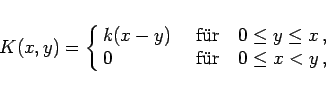
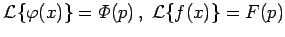
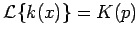
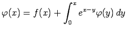

Inhalt Index DeskTop Bronstein

 Lineare Integralgleichungen Volterrasche Integralgleichungen
Lineare Integralgleichungen Volterrasche Integralgleichungen


Besitzt der Kern einer VOLTERRAschen Integralgleichung die spezielle Form
|  | (11.76a) |
dann können zur Lösung der Gleichungen
bzw.
die Eigenschaften der LAPLACE-Transformation genutzt werden. Falls die LAPLACE-Transformierten  und  existieren, dann lauten die transformierten Probleme unter Beachtung des Faltungssatzes
bzw.
Daraus folgt sofort:
bzw.
Die Rücktransformation liefert die Lösung  des Ausgangsproblems. Durch Umformung des Ausdrucks für die LAPLACE-Transformierte der Lösung der Integralgleichung 2. Art gemäß
des Ausgangsproblems. Durch Umformung des Ausdrucks für die LAPLACE-Transformierte der Lösung der Integralgleichung 2. Art gemäß
ergibt sich, falls der Ausdruck
die Transformierte einer Funktion h(x) ist, die Lösungsdarstellung
Die Funktion h(x-y) ist der lösende Kern der Integralgleichung.
| Beispiel |
|
. |